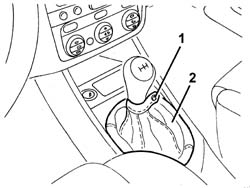
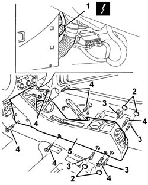

7040L20 tunnel trim - r r
- Path
- Procedures > 70 FITTINGS > 7040 BODYSHELL INTERIOR TRIMS AND FITTINGS > 7040L cabin floor covering > 7040L20 tunnel trim - r r
- Kind
- repair procedure (removal / refitting; the operation number is the code)
- Applies to
- all engines; all production periods
- Interactive page
- https://sloeber94.github.io/elrnDB-a147/en/#/3025833
Applies to: all engines; all production periods
 Removing
Removing
 Refitting
Refitting7040A65 passenger compartment box lock , one , r r (left and right sides)
3380A44 handbrake/linkage protection - r+r
7040L28 tunnel switch panel - r r
1. Open the retaining button on the gear lever protective boot.
2. Remove the gear lever protective boot, after disengaging the inner retainers.

Applies to: all engines; all production periods
1. Disconnect the electrical connections.
 | Name | Connector |
|---|---|---|
1 | Dashboard/centre console coupling |
2. Remove the covers.
3. Undo the bolts securing the armrest support.
4. Undo the bolts securing the tunnel trim. Use the special tool for the bolt (4a).
 | Name | Country |
|---|---|---|
4a | Key | 1.822.132.000 |
5. Remove the tunnel cover, complete with armrest.

Applies to: all engines; all production periods
If necessary:
7040L35 arm rest on tunnel trim with odment tray r r with tunnel trim removed
5010B46 central air duct to rear seat - arrange
5010C32 air outlet on panel trim for rear seats - r r
7065C72 front cigar lighter socket/power point - fasten
7065C73 cigar lighter bulb - r r - includes r r cigar lighter
Disconnect the tunnel cover wiring from the retainers and remove it.
Applies to: all engines; all production periods
Refitting
RemovingCheck that the tunnel trim is not damaged.
If removed:
Fit the tunner cover wiring and secure it with the retainers.
7065C73 cigar lighter bulb - r r - includes r r cigar lighter
7065C72 front cigar lighter socket/power point - fasten
5010C32 air outlet on panel trim for rear seats - r r
5010B46 central air duct to rear seat - arrange
7040L35 arm rest on tunnel trim with odment tray r r with tunnel trim removed
Refit the tunnel trim and fix it with the bolts.
Tighten the bolts securing the armrest mounting.
Fit the covers.
Connect the electrical connection
Position the gear lever protective boot, engage the inner retainers and close the button.
7040L28 tunnel switch panel - r r
3380A44 handbrake/linkage protection - r+r
7040A65 passenger compartment box lock , one , r r (left and right sides)
Topics linked from this page (9)
- 3380A44 handbrake/linkage protection - r+r
- 5010B46 central air duct to rear seat - arrange
- 5010C32 air outlet on panel trim for rear seats - r r
- 7040A65 passenger compartment box lock , one , r r
- 7040L28 tunnel switch panel - r r
- 7040L35 arm rest on tunnel trim with odment tray r r with tunnel trim removed
- 7065C72 front cigar lighter socket/power point - fasten
- 7065C73 cigar lighter bulb - r r - includes r r cigar lighter
- D43 Dashboard/centre console coupling
Topics that link to this page (23)
- 2127A12 hand lever of manual gearbox with hydraulic selection - r r
- 2127A70 support for control levers for manual gearbox with hydraulic selection and handbrake - r r
- 3330D11 brake servo - r r including seperation from master cylinder - facia lining removed for rhd version
- 5010B46 central air duct to rear seat - arrange
- 5010B56 DUCT between climate control casing and air duct to rear seats - R.R.
- 5020L10 additional heater system boiler - r r
- 5040A80 expansion/connection pipe - r r
- 5040B30 expansion valve (tube orifice) - r+r
- 5040C10 air conditioner box - r+r
- 5040C50 air conditioner heater radiator - r+r
- 5040C64 a/c evaporator - r+r
- 5040D76 air contitioner distribution flap control motor - r r
- 5040D84 air conditioner left hand air mixer flap control motor - r r
- 5040D86 air conditioner right hand air mixer flap control motor - r r
- 5040D90 air conditioner system wiring bundle - r r
- 5505C34 intergrated instrument under facia front air bag wiring - r r
- 5505C41 cabin wiring - r r
- 7040A10 instrument facia trim - r+r
- 7040A97 facia trim support beam - r r
- 7040L10 cabin floor carpet - r r
- 7040L13 passenger compartment floor soundproofing - r r
- 7065C72 front cigar lighter socket/power point - fasten
- 7065C73 cigar lighter bulb - r r - includes r r cigar lighter